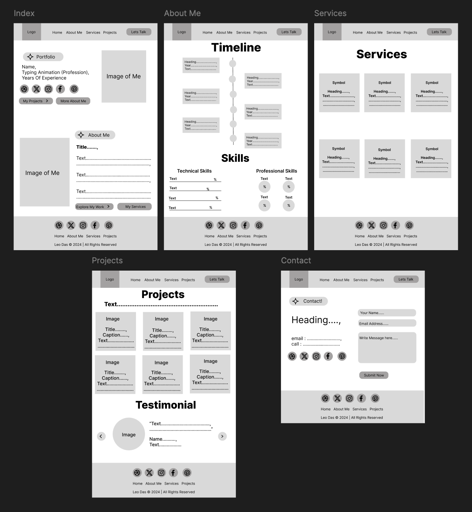
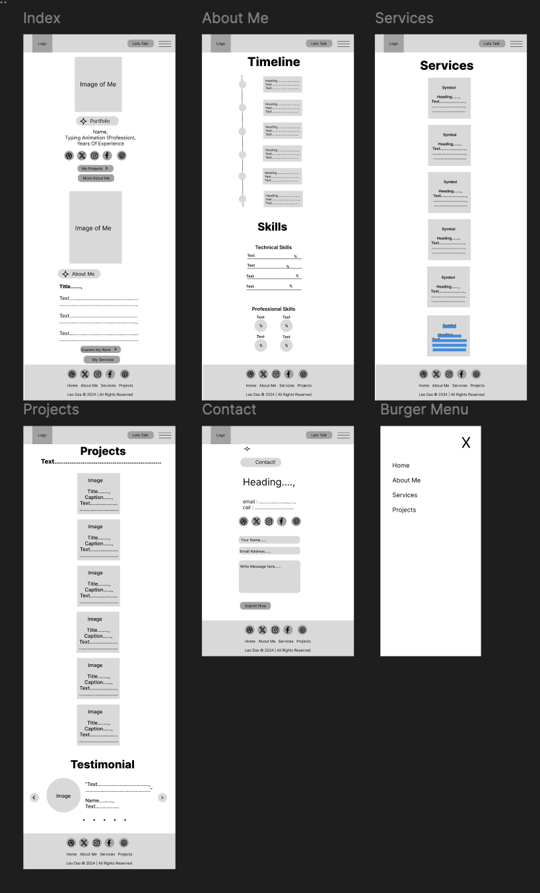

Introduction
The portfolio website of Leo Das is a comprehensive showcase of my skills, experience, and achievements in the field of technology and innovation. It presents the narrative of a tech professional who has spent years honing expertise in AI, web development, and entrepreneurship. The target audience for this portfolio includes potential collaborators, clients, employers, and investors who are interested in cutting-edge tech solutions and innovative leadership.
Story and Focus
The core story of the portfolio is about the evolution of Leo Das as a tech innovator who started with a strong foundation in computer science, AI, and web development, and then grew into a leader and entrepreneur. It aims to highlight the journey from education to professional experience at leading companies like Google and AWS, eventually culminating in the founding of 'Tech Innovate,' a company focused on AI-driven solutions for various industries.
Target Audience
The portfolio is designed for a diverse audience, including:
- Potential Clients: Businesses looking for AI and tech consulting services.
- Investors: Individuals or entities interested in supporting innovative tech startups.
- Collaborators and Partners: Tech professionals and companies seeking collaboration opportunities.
- Recruiters and Employers: Organizations looking to hire an experienced tech leader.
Site Structure
The website follows a structured approach that guides users through different sections seamlessly. The structure includes:
- Home: An introduction to Leo Das with dynamic text effects and a welcome message.
- About Me: A detailed timeline of professional milestones, educational background, and personal achievements.
- Services: An overview of the services offered, including innovation consulting, full-stack development, and AI solutions.
- Projects: Showcases key projects and success stories, demonstrating expertise and innovation in various fields.
- Contact: A contact form and links to social media for easy communication and engagement.
Inspiration
Three professional portfolio sites inspired the design and functionality of my website:
- Sam Smith's Portfolio: Sam's portfolio features a clean, minimalist design focused on user experience, with easy navigation and a clear content hierarchy. I learned the importance of simplicity in design to avoid overwhelming users and ensure they find what they are looking for quickly.
- Denise Chandler's Portfolio: Denise's portfolio uses engaging interactive elements like animated progress bars, dynamic text, and hover effects. Her site taught me how to engage users effectively through visual and interactive elements, making the experience more memorable and dynamic.
- Adham Dannaway's Portfolio: Adham's portfolio uses a unique split-screen design, with a creative way to display his dual skills as a designer and developer. This inspired me to focus on the visual presentation of my skills, showcasing different facets of my professional experience in a compelling and easy-to-follow format.
Accessibility
Ensuring accessibility for users with different abilities is a priority for my portfolio website. Here are three ways in which I made the site accessible:
- High-Contrast Colors and Text Size: The site uses high-contrast colors to make text easy to read against the background. Larger font sizes are used for headings and important content to enhance readability, especially for users with visual impairments.
- Keyboard Navigation: All interactive elements, such as links and buttons, are designed to be navigable using keyboard shortcuts, making the site accessible to users with motor disabilities who may rely on keyboards instead of a mouse.
- Alternative Text for Images: Alt text is provided for all images to ensure that screen readers can convey the content to visually impaired users, enhancing the overall accessibility of the site.
Usability
To improve the usability of my portfolio, I considered several key aspects:
- Responsive Design: The site is fully responsive, adapting to different screen sizes and devices, from large desktop monitors to small mobile phones. This ensures that all users have a consistent and optimized experience regardless of their device.
- Consistent Navigation: The navigation menu is fixed and accessible from all pages, providing a consistent way to move through the site. This reduces confusion and helps users find information quickly.
- Interactive Elements: I incorporated interactive elements like sliders, animations, and hover effects to keep users engaged. These elements provide visual feedback, which improves the user experience by making the site feel dynamic and interactive.
Learning
While creating this portfolio, I had to learn and implement several new techniques and technologies:
- Typing Animation with Typed.js: I learned how to use the Typed.js library to create dynamic typing effects on the homepage, which gives the site a modern and interactive feel. This involved understanding JavaScript libraries and how to integrate them into the project.
- CSS Animations for Timeline: I developed custom CSS animations to create a visually appealing timeline that showcases my career milestones. This required learning keyframe animations and using them to control the animation flow, duration, and transitions smoothly.
- Swiper.js for Testimonials: I utilized Swiper.js to implement a responsive and interactive testimonial section. Learning to use this library involved understanding how to configure Swiper for smooth transitions, pagination, and navigation controls, which enhances the visual appeal and functionality of the testimonials.
Evaluation
Successful Aspects
Several aspects of my work on this portfolio were particularly successful:
- Timeline Section: The timeline effectively visualizes my professional journey, making it easy for users to understand my career progression at a glance. The use of CSS animations adds an engaging element that captures attention.
- Overall Site Design: The clean, modern design of the site, combined with interactive elements, creates a professional and polished look that aligns with my personal brand as a tech innovator. The cohesive color scheme and typography choices contribute to a unified and aesthetically pleasing user experience.
Improvement Areas
There are areas where the portfolio could be improved:
- Projects Section: The projects section could benefit from more detailed case studies, including specific metrics and outcomes that demonstrate the impact and effectiveness of my work. This would provide a deeper understanding for potential clients and employers.
- Services Section: The services section could be expanded with more comprehensive descriptions and examples of how each service can benefit clients. Adding client testimonials or success stories could also enhance credibility.
Resources
In developing this portfolio, I utilized various resources to learn and implement different techniques:
- Online Forums: Participated in developer communities and forums to get feedback and learn best practices.
- Stack Overflow: Searched for solutions to coding challenges and learned from experienced developers.
- YouTube Tutorials: Watched tutorials on web design, CSS animations, and JavaScript libraries to understand complex concepts and implementation methods.
- Online Code Repositories: Referred to open-source projects and code snippets to learn from existing solutions and adapt them for my needs.
Appendices
The appendices include additional materials such as the site map, wireframes, and mock-ups that outline the design and structure of the website.

